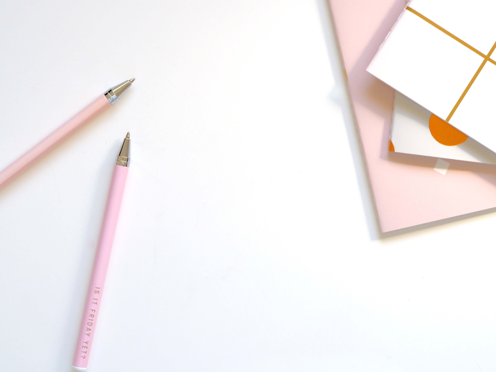

Please take a look around to explore the various pieces I've written. You'll see examples of my professional work with Esko, publications, Substack articles, and poetry. I hope you enjoy!
Esko is a global provider of integrated software and hardware solutions that accelerate the go-to-market process of packaged goods. From design to shelf, Esko solutions automate, connect, and accelerate the entire packaging go-to-market process. Discover content I've written for Esko here.
My personal essays and lifestyle writing have appeared in several online publications. Browse a selection of my published articles here.
I write a regular newsletter on Substack covering creativity, the writing life, and everything in between. Subscribe and read past issues here.
Poetry has always been close to my heart. Read a collection of my poems here.